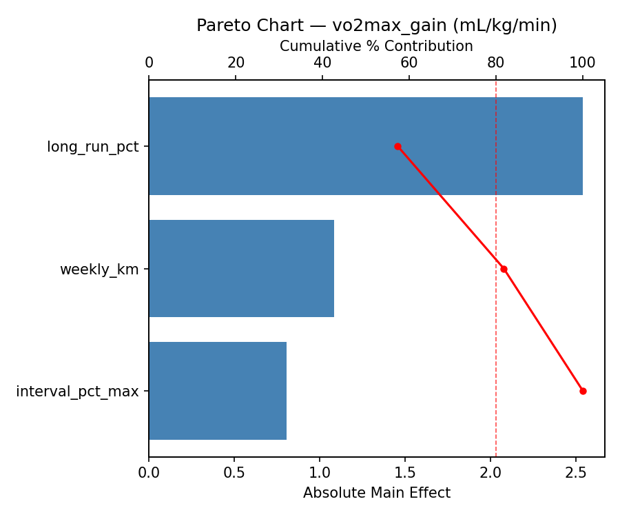
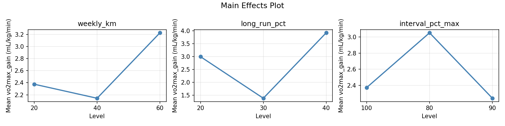
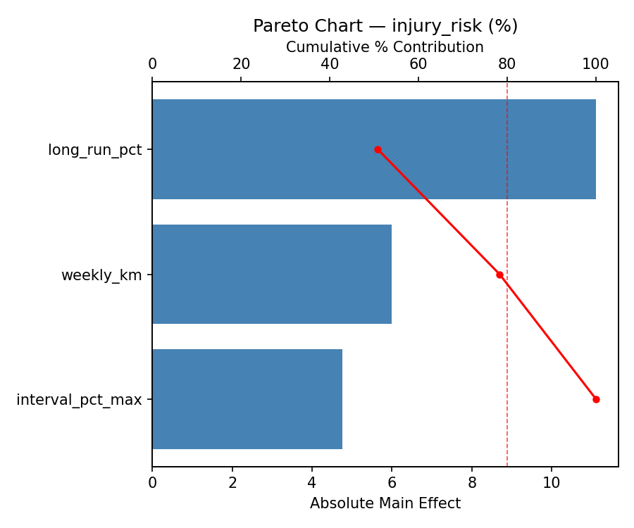
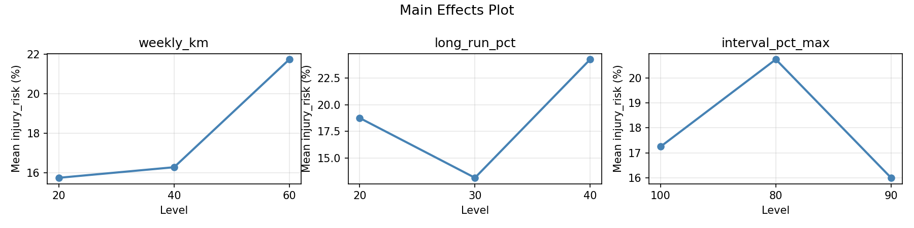
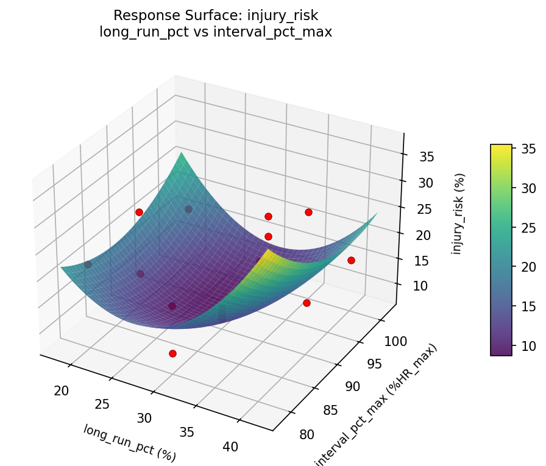
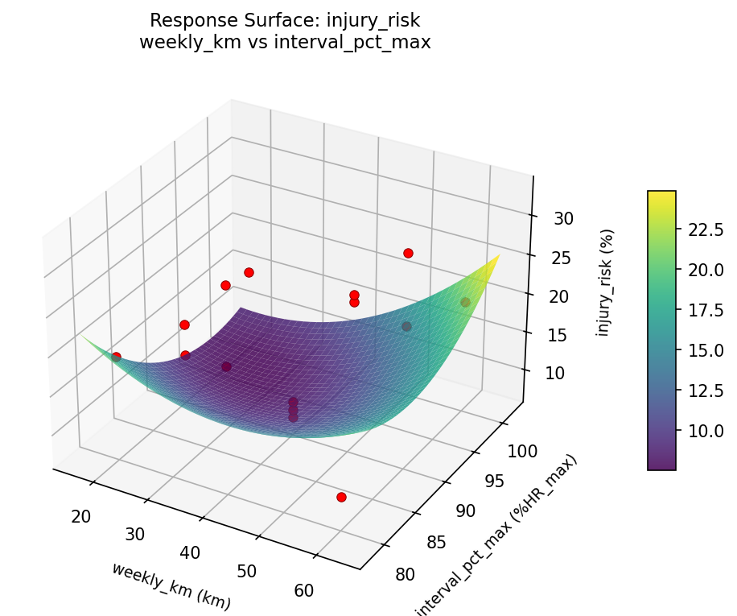
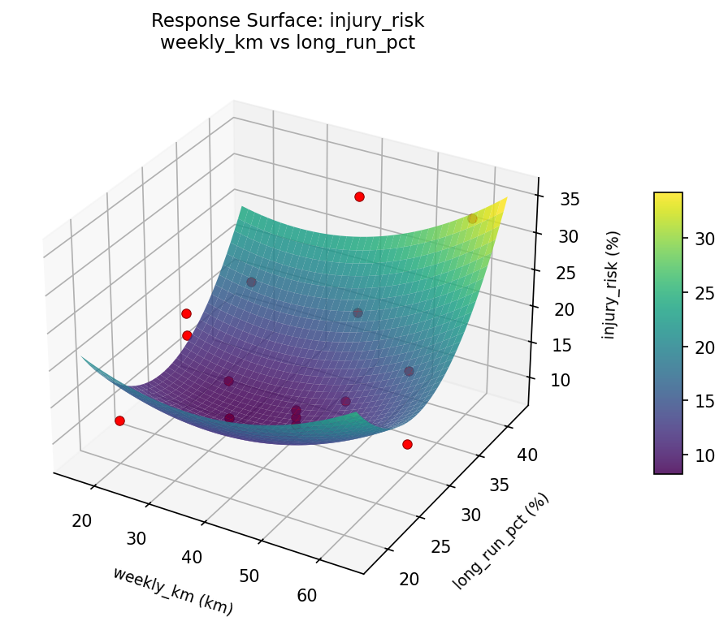
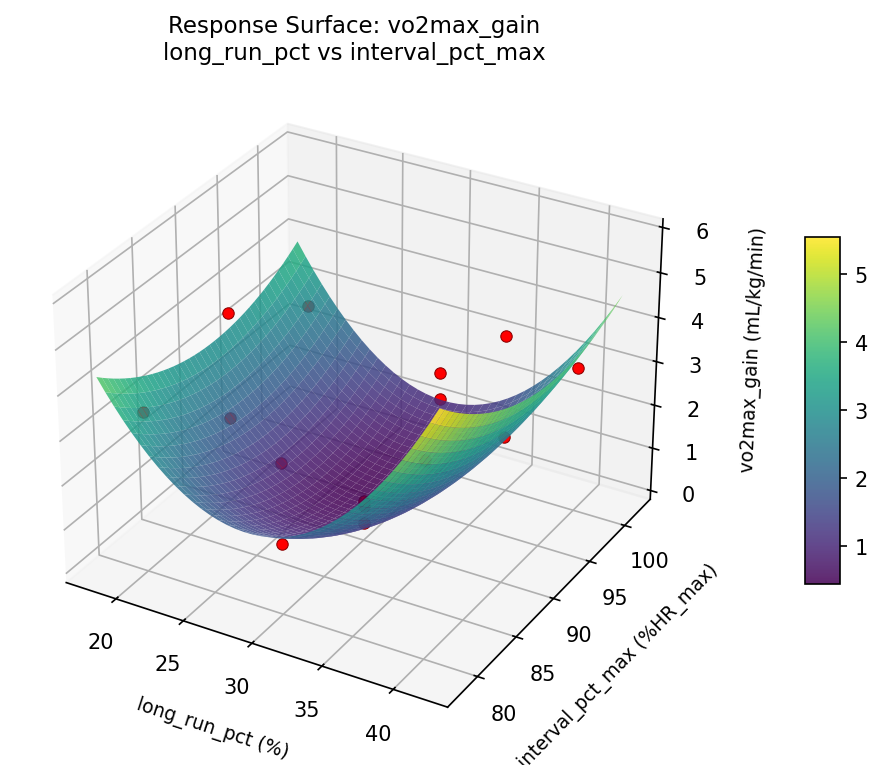
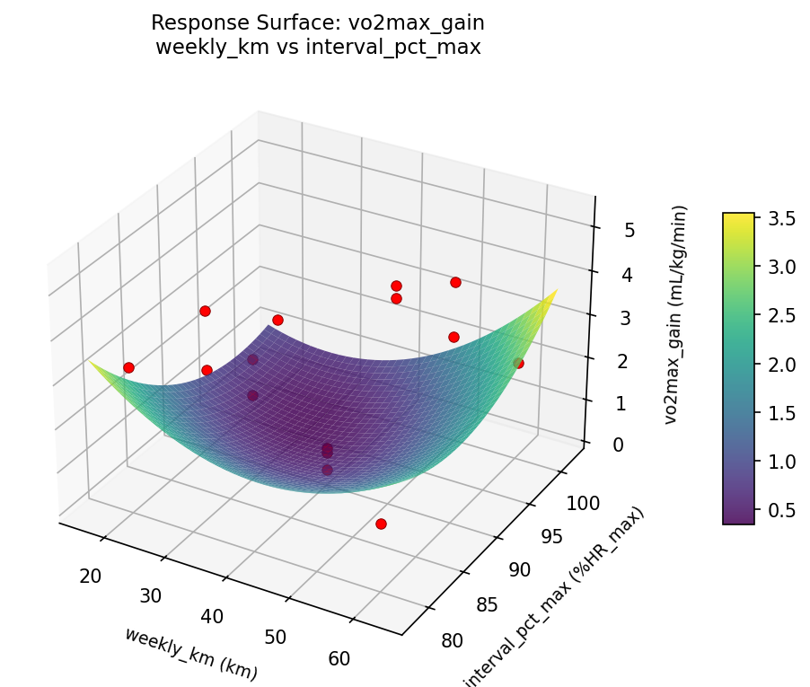
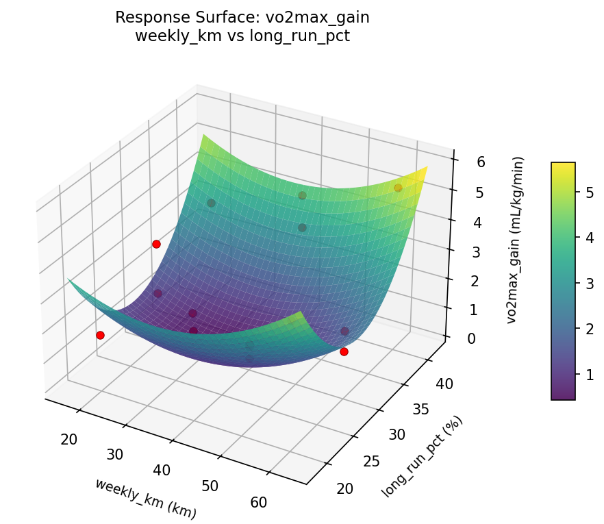

Summary
This experiment investigates running training plan. Box-Behnken design to maximize VO2max improvement and minimize injury risk by tuning weekly mileage, long run percentage, and interval intensity.
The design varies 3 factors: weekly km (km), ranging from 20 to 60, long run pct (%), ranging from 20 to 40, and interval pct max (%HR_max), ranging from 80 to 100. The goal is to optimize 2 responses: vo2max gain (mL/kg/min) (maximize) and injury risk (%) (minimize). Fixed conditions held constant across all runs include rest days = 2, runner level = intermediate.
A Box-Behnken design was chosen because it efficiently fits quadratic models with 3 continuous factors while avoiding extreme corner combinations — requiring only 15 runs instead of the 8 needed for a full factorial at two levels.
Quadratic response surface models were fitted to capture potential curvature and factor interactions. The RSM contour plots below visualize how pairs of factors jointly affect each response.
Key Findings
For vo2max gain, the most influential factors were long run pct (57.3%), weekly km (24.4%), interval pct max (18.2%). The best observed value was 5.3 (at weekly km = 20, long run pct = 30, interval pct max = 100).
For injury risk, the most influential factors were long run pct (50.8%), weekly km (27.5%), interval pct max (21.7%). The best observed value was 8.0 (at weekly km = 20, long run pct = 20, interval pct max = 90).
Recommended Next Steps
- Run confirmation experiments at the predicted optimal settings to validate the model.
- Consider whether any fixed factors should be varied in a future study.
Experimental Setup
Factors
| Factor | Low | High | Unit |
|---|
weekly_km | 20 | 60 | km |
long_run_pct | 20 | 40 | % |
interval_pct_max | 80 | 100 | %HR_max |
Fixed: rest_days = 2, runner_level = intermediate
Responses
| Response | Direction | Unit |
|---|
vo2max_gain | ↑ maximize | mL/kg/min |
injury_risk | ↓ minimize | % |
Configuration
{
"metadata": {
"name": "Running Training Plan",
"description": "Box-Behnken design to maximize VO2max improvement and minimize injury risk by tuning weekly mileage, long run percentage, and interval intensity"
},
"factors": [
{
"name": "weekly_km",
"levels": [
"20",
"60"
],
"type": "continuous",
"unit": "km"
},
{
"name": "long_run_pct",
"levels": [
"20",
"40"
],
"type": "continuous",
"unit": "%"
},
{
"name": "interval_pct_max",
"levels": [
"80",
"100"
],
"type": "continuous",
"unit": "%HR_max"
}
],
"fixed_factors": {
"rest_days": "2",
"runner_level": "intermediate"
},
"responses": [
{
"name": "vo2max_gain",
"optimize": "maximize",
"unit": "mL/kg/min"
},
{
"name": "injury_risk",
"optimize": "minimize",
"unit": "%"
}
],
"settings": {
"operation": "box_behnken",
"test_script": "use_cases/108_running_performance/sim.sh"
}
}
Experimental Matrix
The Box-Behnken Design produces 15 runs. Each row is one experiment with specific factor settings.
| Run | weekly_km | long_run_pct | interval_pct_max |
|---|
| 1 | 40 | 20 | 80 |
| 2 | 40 | 30 | 90 |
| 3 | 60 | 30 | 100 |
| 4 | 60 | 30 | 80 |
| 5 | 40 | 30 | 90 |
| 6 | 40 | 30 | 90 |
| 7 | 20 | 30 | 100 |
| 8 | 60 | 20 | 90 |
| 9 | 40 | 20 | 100 |
| 10 | 60 | 40 | 90 |
| 11 | 20 | 30 | 80 |
| 12 | 40 | 40 | 100 |
| 13 | 20 | 20 | 90 |
| 14 | 20 | 40 | 90 |
| 15 | 40 | 40 | 80 |
Step-by-Step Workflow
1
Preview the design
$ python doe.py info --config use_cases/108_running_performance/config.json
2
Generate the runner script
$ python doe.py generate --config use_cases/108_running_performance/config.json \
--output use_cases/108_running_performance/results/run.sh --seed 42
3
Execute the experiments
$ bash use_cases/108_running_performance/results/run.sh
4
Analyze results
$ python doe.py analyze --config use_cases/108_running_performance/config.json
5
Get optimization recommendations
$ python doe.py optimize --config use_cases/108_running_performance/config.json
6
Generate the HTML report
$ python doe.py report --config use_cases/108_running_performance/config.json \
--output use_cases/108_running_performance/results/report.html
Real-World Experiment Workflow
ℹ
Physical Health & Fitness Experiment? Use the Manual Workflow
Human performance experiments involve real physiological responses. Each participant's body responds differently, and results require actual measurement. The simulation script above is for demonstration. For your real experiments, use record, status, and export-worksheet.
$ python doe.py export-worksheet --config use_cases/108_running_performance/config.json \
--format csv --output worksheet.csv
$ python doe.py status --config use_cases/108_running_performance/config.json
$ python doe.py record --config use_cases/108_running_performance/config.json --run 1
$ python doe.py analyze --config use_cases/108_running_performance/config.json --partial
$ python doe.py analyze --config use_cases/108_running_performance/config.json
$ python doe.py optimize --config use_cases/108_running_performance/config.json
$ python doe.py report --config use_cases/108_running_performance/config.json \
--output report.html
✔
Works Without a Test Script
The analysis pipeline doesn't care how results were produced. Record your measurements with record, and the full analysis, optimization, and reporting pipeline works identically. Use --partial to get early insights before all runs are complete.
Features Exercised
| Feature | Value |
|---|
| Design type | box_behnken |
| Factor types | continuous (all 3) |
| Arg style | double-dash |
| Responses | 2 (vo2max_gain ↑, injury_risk ↓) |
| Total runs | 15 |
Analysis Results
Generated from actual experiment runs using the DOE Helper Tool.
Response: vo2max_gain
Top factors: long_run_pct (57.3%), weekly_km (24.4%), interval_pct_max (18.2%).
Pareto Chart

Main Effects Plot

Response: injury_risk
Top factors: long_run_pct (50.8%), weekly_km (27.5%), interval_pct_max (21.7%).
Pareto Chart

Main Effects Plot

Response Surface Plots
3D surfaces fitted with quadratic RSM. Red dots are observed data points.
injury risk long run pct vs interval pct max

injury risk weekly km vs interval pct max

injury risk weekly km vs long run pct

vo2max gain long run pct vs interval pct max

vo2max gain weekly km vs interval pct max

vo2max gain weekly km vs long run pct

Full Analysis Output
RSM surface: rsm_vo2max_gain_weekly_km_vs_long_run_pct.png
RSM surface: rsm_vo2max_gain_weekly_km_vs_interval_pct_max.png
RSM surface: rsm_vo2max_gain_long_run_pct_vs_interval_pct_max.png
RSM surface: rsm_injury_risk_weekly_km_vs_long_run_pct.png
RSM surface: rsm_injury_risk_weekly_km_vs_interval_pct_max.png
RSM surface: rsm_injury_risk_long_run_pct_vs_interval_pct_max.png
=== Main Effects: vo2max_gain ===
Factor Effect Std Error % Contribution
--------------------------------------------------------------
long_run_pct 2.5393 0.3814 57.3%
weekly_km 1.0821 0.3814 24.4%
interval_pct_max 0.8071 0.3814 18.2%
=== Summary Statistics: vo2max_gain ===
weekly_km:
Level N Mean Std Min Max
------------------------------------------------------------
20 4 2.3750 0.8995 1.5000 3.2000
40 7 2.1429 1.6019 0.2000 4.2000
60 4 3.2250 1.7951 1.4000 5.3000
long_run_pct:
Level N Mean Std Min Max
------------------------------------------------------------
20 4 3.0000 1.0165 1.7000 4.1000
30 7 1.3857 1.0254 0.2000 3.2000
40 4 3.9250 1.0532 3.1000 5.3000
interval_pct_max:
Level N Mean Std Min Max
------------------------------------------------------------
100 4 2.3750 0.7182 1.5000 3.1000
80 4 3.0500 1.1818 1.4000 4.2000
90 7 2.2429 1.9612 0.2000 5.3000
=== Main Effects: injury_risk ===
Factor Effect Std Error % Contribution
--------------------------------------------------------------
long_run_pct 11.1071 1.9924 50.8%
weekly_km 6.0000 1.9924 27.5%
interval_pct_max 4.7500 1.9924 21.7%
=== Summary Statistics: injury_risk ===
weekly_km:
Level N Mean Std Min Max
------------------------------------------------------------
20 4 15.7500 2.8723 12.0000 19.0000
40 7 16.2857 8.5774 8.0000 32.0000
60 4 21.7500 9.5350 10.0000 33.0000
long_run_pct:
Level N Mean Std Min Max
------------------------------------------------------------
20 4 18.7500 5.3774 12.0000 24.0000
30 7 13.1429 5.0474 8.0000 20.0000
40 4 24.2500 9.5350 16.0000 33.0000
interval_pct_max:
Level N Mean Std Min Max
------------------------------------------------------------
100 4 17.2500 1.8930 16.0000 20.0000
80 4 20.7500 9.0692 10.0000 32.0000
90 7 16.0000 9.2916 8.0000 33.0000
Pareto chart (vo2max_gain): use_cases/108_running_performance/results/analysis/pareto_vo2max_gain.png
Pareto chart (injury_risk): use_cases/108_running_performance/results/analysis/pareto_injury_risk.png
Main effects (vo2max_gain): use_cases/108_running_performance/results/analysis/main_effects_vo2max_gain.png
Main effects (injury_risk): use_cases/108_running_performance/results/analysis/main_effects_injury_risk.png
Optimization Recommendations
=== Optimization: vo2max_gain ===
Direction: maximize
Best observed run: #3
weekly_km = 20
long_run_pct = 30
interval_pct_max = 100
Value: 5.3
RSM Model (linear, R² = 0.0826, Adj R² = -0.1676):
Coefficients:
intercept +2.4933
weekly_km +0.0375
long_run_pct +0.4375
interval_pct_max +0.3500
RSM Model (quadratic, R² = 0.6490, Adj R² = 0.0172):
Coefficients:
intercept +2.9000
weekly_km +0.0375
long_run_pct +0.4375
interval_pct_max +0.3500
weekly_km*long_run_pct -0.4750
weekly_km*interval_pct_max -1.7000
long_run_pct*interval_pct_max +0.7500
weekly_km^2 +0.2875
long_run_pct^2 -0.3625
interval_pct_max^2 -0.6875
Curvature analysis:
interval_pct_max coef=-0.6875 concave (has a maximum)
long_run_pct coef=-0.3625 concave (has a maximum)
weekly_km coef=+0.2875 convex (has a minimum)
Notable interactions:
weekly_km*interval_pct_max coef=-1.7000 (antagonistic)
long_run_pct*interval_pct_max coef=+0.7500 (synergistic)
weekly_km*long_run_pct coef=-0.4750 (antagonistic)
Predicted optimum (from quadratic model):
weekly_km = 20
long_run_pct = 30
interval_pct_max = 100
Predicted value: 4.5125
Model quality: Moderate fit — use predictions directionally, not precisely.
Factor importance:
1. interval_pct_max (effect: 1.0, contribution: 44.7%)
2. long_run_pct (effect: 0.9, contribution: 37.9%)
3. weekly_km (effect: 0.4, contribution: 17.3%)
=== Optimization: injury_risk ===
Direction: minimize
Best observed run: #11
weekly_km = 20
long_run_pct = 20
interval_pct_max = 90
Value: 8.0
RSM Model (linear, R² = 0.0612, Adj R² = -0.1949):
Coefficients:
intercept +17.6000
weekly_km +0.2500
long_run_pct +0.2500
interval_pct_max +2.5000
RSM Model (quadratic, R² = 0.4300, Adj R² = -0.5960):
Coefficients:
intercept +20.3333
weekly_km +0.2500
long_run_pct +0.2500
interval_pct_max +2.5000
weekly_km*long_run_pct -2.2500
weekly_km*interval_pct_max -7.2500
long_run_pct*interval_pct_max +2.7500
weekly_km^2 -0.0417
long_run_pct^2 -2.0417
interval_pct_max^2 -3.0417
Curvature analysis:
interval_pct_max coef=-3.0417 concave (has a maximum)
long_run_pct coef=-2.0417 concave (has a maximum)
weekly_km coef=-0.0417 negligible curvature
Notable interactions:
weekly_km*interval_pct_max coef=-7.2500 (antagonistic)
long_run_pct*interval_pct_max coef=+2.7500 (synergistic)
weekly_km*long_run_pct coef=-2.2500 (antagonistic)
Predicted optimum (from linear model):
weekly_km = 60
long_run_pct = 30
interval_pct_max = 100
Predicted value: 20.3500
Model quality: Weak fit — consider adding center points or using a different design.
Factor importance:
1. interval_pct_max (effect: 5.4, contribution: 67.1%)
2. long_run_pct (effect: 2.1, contribution: 25.8%)
3. weekly_km (effect: 0.6, contribution: 7.1%)